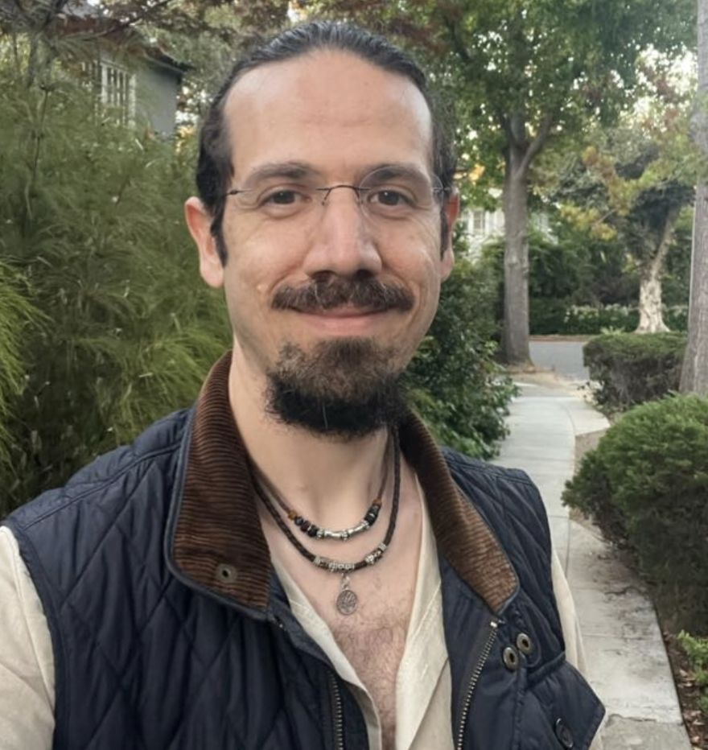

Curiosity
Questions are more useful to me than conclusions. I would rather stay with a good question than rush to a tidy answer.
MEET OCEAN
A path through science, meditation, embodiment, and the human work of healing.
ABOUT

My path has moved through science, research, technology, meditation, embodiment, and the deeply human work of healing.
I’m interested in what becomes possible when we meet ourselves with more curiosity, compassion, presence, and honesty, and when we let different ways of knowing speak to one another.
A scientific mind and a feeling body are not opposites. I try to hold both: rigorous about what we know, humble about what we don’t.
WHAT GUIDES ME
Questions are more useful to me than conclusions. I would rather stay with a good question than rush to a tidy answer.
The body keeps its own kind of knowledge. Slowing down enough to listen is where most change begins.
About what the evidence shows, about what I don’t know yet, and about what is real in my own experience.
Perhaps healing is not becoming someone new,
but becoming more fully who we already are.
LET’S CONNECT
You don’t need to figure this out alone. Write to me with a question, a reflection, or just a hello.
Book a conversationTHE OCEAN JOURNAL · ABOUT
Personal notes on the path behind Ocean: science, migration, curiosity, and becoming.
New writing is added slowly, with care. Explore all reflections →